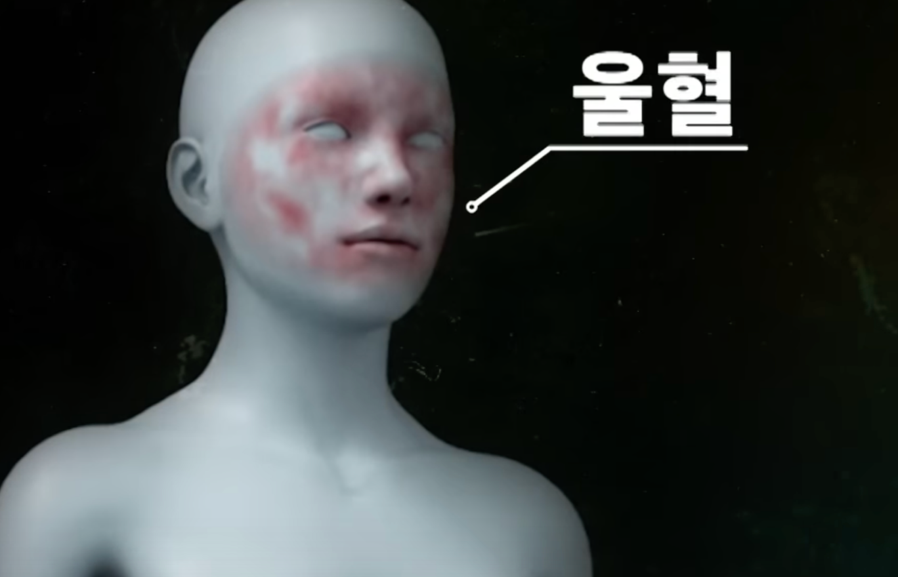
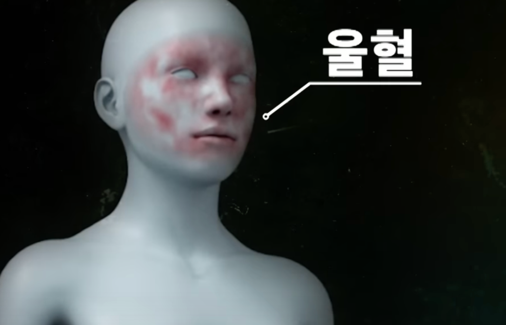
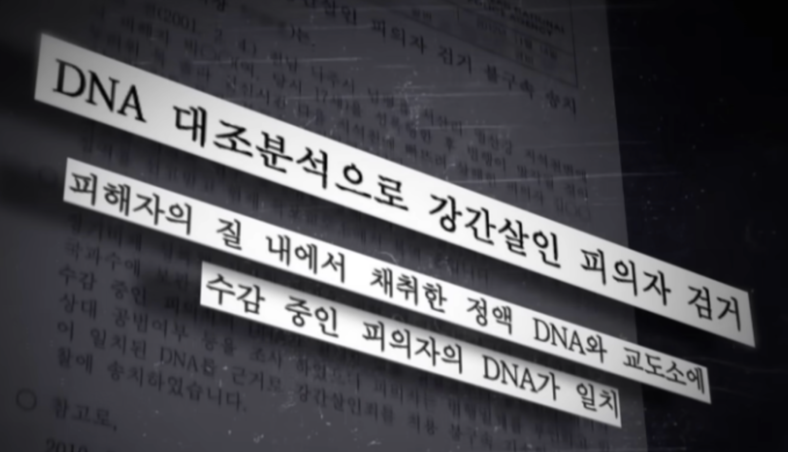
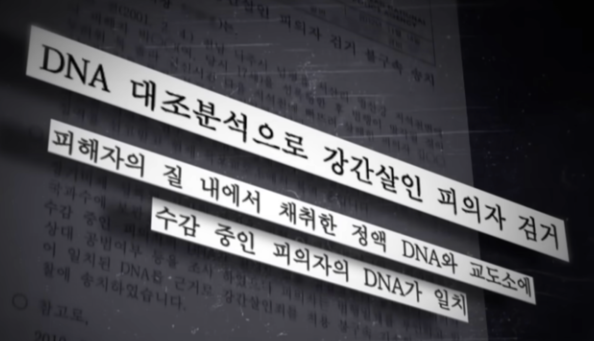

2001년 2월 4일 전남 나주시 남평읍 드들강 유역에서 당시 18살의 여고생 C양이
성폭행 당한 채 알몸으로 강에 빠진 채 숨져있었다. 목이 졸린 흔적은 있었지만
경정적인 사인은 익사로 나왔고 C양의 주검에선 범인의 것으로 추정되는 정액과 범인을
특정할 수 있는 DNA까지 확보했으나 끝내 용의자를 찾지 못했다.
성폭행 당한 채 알몸으로 강에 빠진 채 숨져있었다. 목이 졸린 흔적은 있었지만
경정적인 사인은 익사로 나왔고 C양의 주검에선 범인의 것으로 추정되는 정액과 범인을
특정할 수 있는 DNA까지 확보했으나 끝내 용의자를 찾지 못했다.
피해자 C양은 사건 전날 새벽에 외출한 후 들어오지 않았다. 이후 C양의 어머니는 사건 당일 오후 방송된
뉴스를 통해 혹시나 하는 마음으로 병원으로 향했고 그 곳에서 시신으로 발견된 C양의 소식을 접하게 되었다.
뉴스를 통해 혹시나 하는 마음으로 병원으로 향했고 그 곳에서 시신으로 발견된 C양의 소식을 접하게 되었다.
수사팀은 시신 발견 직후 대대적인 수사에 나섰지만 사건은 점점 미궁 속으로 빠져들었다. 이 사건은 당시
광주광역시에 살던 C양이 어떠한 경로로 나주시까자 가게 되었는지에서부터 모든 것이 미스테리였다. 탐문
수사로는 C양이 사건 발생 전날 밤 11시 30분경 광주광역시 남구의 한 정육점 앞에서 두 명의 남자와 있는
것을 본 17살 A군의 진술이 마지막 목격이었다.
당시 기술로는 익사한 시신에서 지문을 채취하는 것조차 불가능하였고 무엇보다 C양이 연고가 없는 나주시에서
발견된 점도 수사가 미궁에 빠진 이유 중 하나이다.
광주광역시에 살던 C양이 어떠한 경로로 나주시까자 가게 되었는지에서부터 모든 것이 미스테리였다. 탐문
수사로는 C양이 사건 발생 전날 밤 11시 30분경 광주광역시 남구의 한 정육점 앞에서 두 명의 남자와 있는
것을 본 17살 A군의 진술이 마지막 목격이었다.
당시 기술로는 익사한 시신에서 지문을 채취하는 것조차 불가능하였고 무엇보다 C양이 연고가 없는 나주시에서
발견된 점도 수사가 미궁에 빠진 이유 중 하나이다.

2001년 2월 4일 전남 나주시 남평읍 드들강 유역에서 당시 18살의 여고생 C양이 성폭
행 당한 채 알몸으로 강에 빠진 채 숨져있었다. 목이 졸린 흔적은 있었지만 경정적인 사
인은 익사로 나왔고 C양의 주검에선 범인의 것으로 추정되는 정액과 범인을 특정할 수
있는 DNA까지 확보했으나 끝내 용의자를 찾지 못했다. 수사팀은 시신 발견 직후 대대
적인 수사에 나섰지만 사건은 점점 미궁 속으로 빠져들었다. 이 사건은 당시 광주광역시
에 살던 C양이 어떠한 경로로 나주시까자 가게 되었는지에서부터 모든 것이 미스테리였
다. 당시 탐문 수사로는 C양이 사건 발생 전날 밤 11시 30분경 광주광역시 남구의 한 정
육점 앞에서 두 명의 남자와 있는 것을 본 17살 A군의 진술이 마지막 목격이었다
당시 기술로는 익사한 시신에서 지문을 채취하는 것조차 불가능하였고 무엇보다 C양이 연고가 없는 나주시에서 발견된 점도 수사가 미궁에 빠진 이유 중 하나이다.
당시 기술로는 익사한 시신에서 지문을 채취하는 것조차 불가능하였고 무엇보다 C양이 연고가 없는 나주시에서 발견된 점도 수사가 미궁에 빠진 이유 중 하나이다.
 
